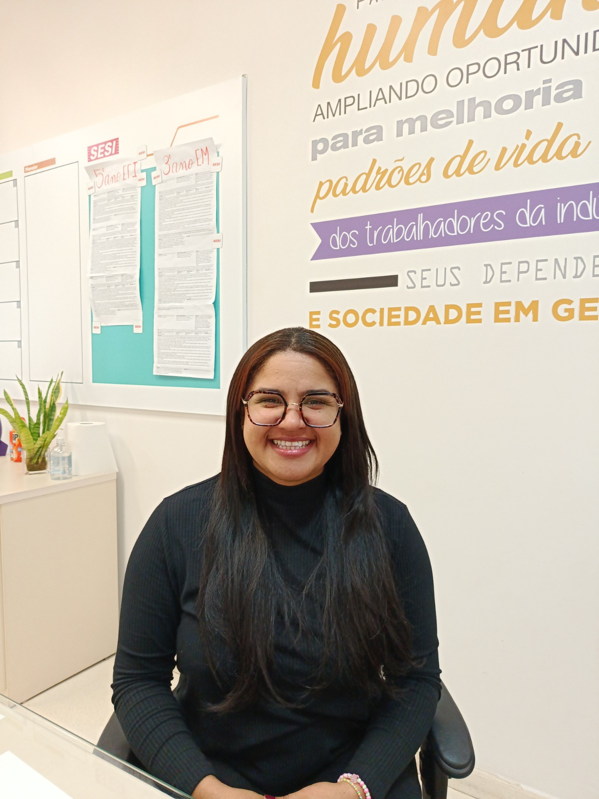

"Educação é dar caminho, direcionamento e trazer transformação."
Clique para ler a entrevista completa
Sou a Coordenadora Pedagógica do SESI Vinhedo. Minha trajetória na instituição começou quando eu ainda cursava a graduação em Pedagogia. Sou graduada em Pedagogia com mestrado em Educação na linha de Educação Matemática. Entrei no SESI como estagiária em Itatiba, fiz o concurso público e fui aprovada em 13º lugar entre mais de 4 mil candidatos. Atuei como professora, fui convidada para elaborar material didático, ministrar formações e oficinas, até que em 2024 surgiu a oportunidade de assumir a coordenação pedagógica em Vinhedo. A educação sempre me encantou; fico realizada ao ver o conhecimento se desenvolvendo e o trabalho refletindo na aprendizagem dos estudantes.
Minha caminhada teve grandes desafios. Estudei em escola de periferia, sem a base que os alunos têm hoje e onde faltavam professores. Fui letrada de fato na faculdade e entrei na pedagogia com dificuldades em escrita e informática. Unindo-me a um grupo de estudos, estudei intensamente, conquistei uma bolsa de mestrado e venci. No início da carreira, precisei superar preconceitos por vir de bairro periférico, por ser mulher preta e ex-estagiária, provando a qualidade do meu trabalho. Como conquista marcante, tenho orgulho do legado que deixei: os artigos e livros publicados, o material didático de matemática que escrevi para o SESI e a minha pesquisa de mestrado, que foi pioneira no Brasil ao analisar o ensino de álgebra nos anos iniciais.
Minha mãe é minha grande inspiração. Embora tenha estudado até a terceira série, ela trabalhava muito, me incentivava a estudar e me ensinou a ter discernimento. Cuidar dela por nove meses em estado vegetativo antes de seu falecimento me amadureceu profundamente. Entendo que o meu trabalho na coordenação representa a regulação da trajetória escolar dos alunos, garantindo o acompanhamento dos professores e a qualidade da aprendizagem. Meu conselho aos estudantes é que descubram suas habilidades, foquem no que gostam e saibam escolher com quem caminhar, sem perder tempo com quem não agrega. À comunidade escolar, deixo a mensagem: valorizem e aproveitem a oportunidade de estudar no SESI e a excelência dos professores. Não percam tempo com distrações e construam uma base sólida para o futuro.

"Trabalhar com educação é a minha vida; é saber que deixamos marcas positivas e duradouras na história dos alunos."
Clique para ler a entrevista completa
Trabalho na instituição desde 2003, somando 23 anos no ensino fundamental. Sou pedagoga de formação e atuei durante 19 anos em sala de aula com alfabetização de primeiro e segundo ano. Em 2021 passei pelos processos seletivos e, em 2022, assumi como coordenadora pedagógica numa escola de Jundiaí. Após ingressar no programa de treinamento de diretores da Rede SESI e passar por várias formações no estado, assumi a direção do SESI 242 de Vinhedo no início de 2026.
O que eu mais gosto no meu trabalho é cuidar das pessoas: garantir uma educação de qualidade aos alunos, apoiar a formação continuada dos professores e proporcionar um ambiente agradável e acolhedor para todas as equipes de trabalho. A gestão estratégica é fundamental porque é o planejamento que faz toda a parte operacional da escola acontecer.
O maior desafio da minha trajetória tem sido acompanhar as mudanças aceleradas das novas gerações e da tecnologia para manter os alunos engajados. Minha maior conquista profissional foi alcançar o sonho de me tornar diretora. Minha inspiração é minha mãe, que mesmo com pouca escolaridade, lutou muito para que eu pudesse estudar. Para mim, trabalhar com educação é minha vida. Deixo como mensagem a importância de estudarmos continuamente e valorizarmos a nossa comunidade escolar.